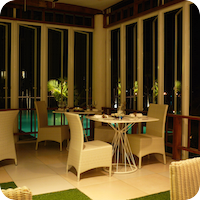
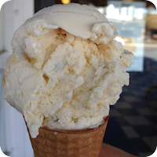
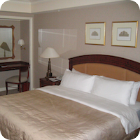

Food & Drink
Dining in Ridgefield
Bare Burger
Burgers
38 Danbury Road map
edit
Dimitri’s Diner
American
This full-service diner boasts one of the most expansive and interesting menus you’re likely to find anywhere in the Greater Fairfield County/Westchester County areas.
16 Prospect Street map
dimitrisdiner.com 24/7 edit
Gallo
Italian
5 Grove Street map
galloridgefield.com edit
The Hideaway
Beers on tap:
- Brooklyn Lager
- Palm Amber Ale
- Dogfish 60min IPA
- Allagash Black Belgian Stout
thehideawaykitchenandbar.com edit
The Little Pub
Beers on tap:
- Guinness
- Stella artois
- Palm speciale belge amber
littlepub.com edit
Piccolo Pizza
map
jazzeria.com edit
Toscana Italian Restaurant
Italian
43 Danbury Road map
toscanaridgefield.com edit
Venice Restaurant & Pizza
3 Copps Hill Plaza map
edit
Cafes
Dunkin Donuts
603 Danbury Road map
edit
Starbucks
90 Danbury Road map
starbucks.com edit
Tusk & Cup
51 Ethan Allen Highway map
tuskandcup.com edit
Ice-Cream and frozen yogurt
Carvel
113 Danbury Road map
edit
Deborah Ann's Sweet Shoppe
Featuring homemade chocolates and ice cream, bulk candy, and gifts for all ages.
381 Main Street map
deborahanns.com Sunday-Thursday 10am-8pm : Friday-Saturday 10am-10pm edit
Peachwave of Ridgefield
32 Danbury Road map
edit
Ridgefield Ice Cream Shop
680 Danbury Road map
edit
Activities
Places to visit
Aldrich Contemporary Art Museum
258 Main Street map
edit
Keeler Tavern Museum
132 Main Street map
keelertavernmuseum.org edit
Recreation
Aldrich Park
Municipal, Open To Public Without Fee
map
edit
Ballard Park
Municipal, Open To Public Without Fee
map
06:00-21:00 edit
East Ridge Recreation Area
map
edit
Graham Dickinson SPIRIT Skate Park
map
Mo-Fr 15:00-dusk; Sa Su PH 12:00-dusk edit
The Imagination Station at Ballad Park
map
edit
Justine H. Butler Tennis Courts
map
edit
Martin Park (Great Pond)
Municipal, Open To Public Without Fee
map
edit
Recreation Center
195 Danbury Road map
ridgefieldparksandrec.org edit
Ridgefield Golf Club
545 Ridgebury Road map
ridgefieldgc.com edit
Seth Low Pierrepont State Park Scenic Reserve
map
edit
Silver Spring Country Club
439 Silver Spring Road map
silverspringcc.org edit
Sturges Park
camping – limited to Scouts and civic groups
Rippowan Road map
ridgefieldparksandrec.org edit
Winter Garden Ice Arena
111 Prospect Ridge map
edit
Yanity Gymnasium
60 Prospect Street map
edit

Lodging
West Lane Inn
22 West Lane map
westlaneinn.com edit
Worship
First Church of Christ Scientist
Christian : Scientist
260 Main Street map
edit
First Congregational Church
Christian : Congregational
map
edit
Jesse Lee Memorial United Methodist Church
Christian : Methodist
207 Main Street map
jesseleechurch.com edit
Ridgebury Congregational Church
Christian
map
edit
Ridgefield Christian Center Church
Christian
map
edit
Saint Andrews Church
Christian
map
edit
Saint Elizabeth Seton Church
Christian
map
edit
Saint Marys Roman Catholic Church
Christian : Catholic
map
edit
Saint Stephens Episcopal Church
Christian : Episcopal
map
edit
Temple Shearith Israel
Jewish
map
edit